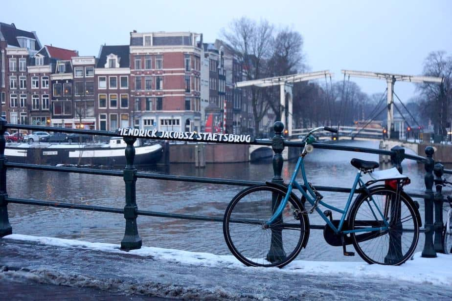
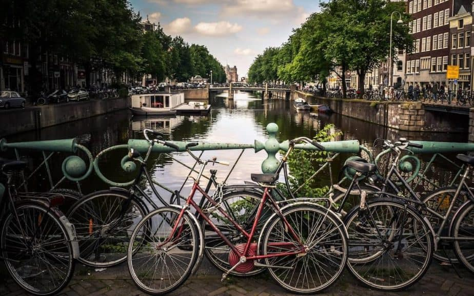
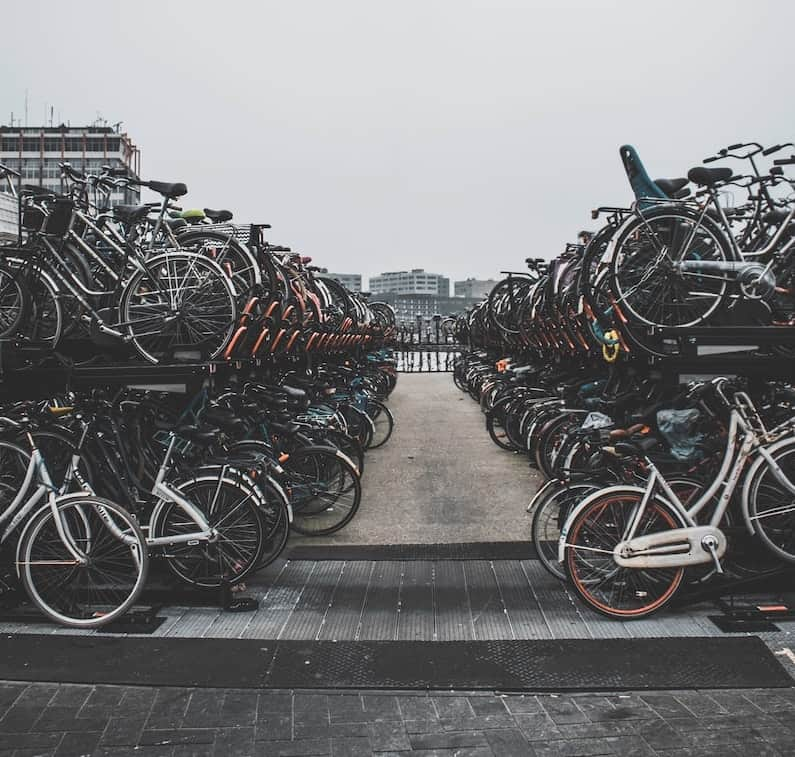
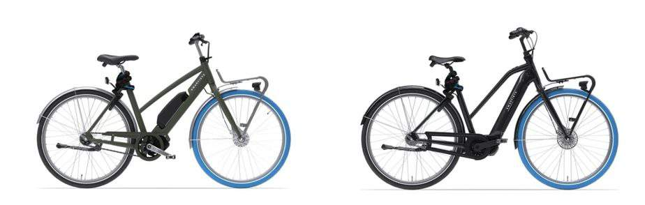
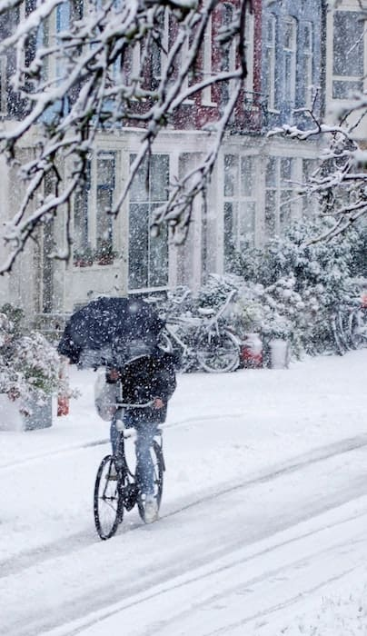

Where to rent an eBike in Amsterdam?
Find out where to rent an electric bike in Amsterdam. Compare rental prices, find locations, and discover ebiking in Amsterdam from a local.


Amsterdam is one of the most popular tourist destinations in the Netherlands, and the best way to explore the city is to do it like a local and ride a bike.
Amsterdam boasts some of the best cycle paths in the world and is probably the most bike-friendly city ever built.
There are numerous bike shops where you can hire city bikes, but finding a place where you can rent an ebike is a little more complicated.
Typically, bike shops in Amsterdam require a larger deposit for renting an electric bike (which are called ‘elektrische fiets’ in Dutch), and in some bike shops, you need to call ahead and reserve an electric bike beforehand.
Luckily for you, I live in Amsterdam and so I’ve done all the research so that you don’t have to.
I’ve contacted every single bike rental shop in Amsterdam to find out if they rent electric bikes, for what price, and under what conditions.
Below you’ll find each of the bike rental shops that offer ebike rentals in Amsterdam with a short description of the store, what kind of ebikes they offer for rental, how much you’ll have to pay, and what terms and conditions apply. Let’s dive right in and find out where to rent electric bikes in Amsterdam.

Electric Bike Rental Amsterdam: Best Short-Term Options
There are many bike shops in Amsterdam, many of which offer short-term electric bike rentals. I’ve selected the four best options. I think all of these shops offer great service, but the prices and conditions do differ, so please read on to find out which one suits you.
1. Het Zwarte Fietsenplan (Black Bikes) | Price Per Day: $$$
Shop Description: The Zwarte Fietsplan (Black Bikes in English) is one of the largest bike shops in the Netherlands, with more than 16 locations across the county and 8 different shops in Amsterdam where the company was founded.
The shop offers bike repairs, sales, and rental. They have a wide selection of eBikes for sale and also stock electric cargo bikes, known as ‘elektrische bakfiets’ in Dutch.
Renting an Electric Bike from Het Zwarte Fietsenplan
To rent an ebike from Black Bikes you need to visit their store near Frederiksplein. Unfortunately, unlike with regular bicycles, you can’t pick up and drop off a bike at any of their stores. You need to collect the bike from the store and then return it to the same store when you’re finished.
Due to the higher value of an ebike, the company requires a credit card with a €500 authorisation as a deposit in case you fail to return the bike. Insurance against theft and damage, provided you follow the rules in your plan, such as ensuring the bike is properly locked each time you leave it alone, is included in the basic cost of the rental.
As far as I know, every ebike rental company in Amsterdam will provide you with two locks for the bike you rent. You should always lock the bike with both locks if you want the insurance to be valid in the event the bike is stolen.
eBike Rental Plan at Black Bikes Amsterdam:
| Time | Price |
|---|---|
| 3 Hours | €24 |
| 24 Hours | €37.50 |
| 2-4th Day | €30 |
| 5th Day | €22.50 |
Where is the Black Bikes eBike Rental Point?
Black Bikes (Het Zwarte Fietsenplan) have shops all over the city. Use the contact number below to ensure the store closest to you has an electric bike for rent.
In Amsterdam Center:
- Oudekerksplein 62, 1012 HA Amsterdam
- Lijnbaansgracht 282, 1017 RM Amsterdam
- Falckstraat 47, 1017 VV Amsterdam
- Nieuwezijds Voorburgwal 146, 1012 SJ Amsterdam
In Amsterdam East:
- Land van Cocagneplein 1E, 1093 NB Amsterdam
In Amsterdam South:
- Maasstraat 106, 1078 HN Amsterdam
- Koninginneweg 267-269, 1075 CW Amsterdam
- Beethovenstraat 86, 1077 JN Amsterdam
Business Hours: 08:30 – 18:30 Weekdays | 09:00 – 18:00 Weekends
Telephone Number: 085 273 5994
Website: https://www.hetzwartefietsenplan.com/winkelzoeker
2. Mac Bikes | Price Per Day: $$
Mac Bikes has existed since 1988 and were among the first bike shops to offer tourist bike rentals in Amsterdam. Today they receive around 150,000 visitors to their shops every year.
Mac Bikes has four bike rental points all located in the centre of Amsterdam. Only one of their shops rents ebikes and it’s conveniently located on the eastern edge of Amsterdam’s central station. You can hop off the train from Schipol airport and walk 2 minutes through the station and you’ll find yourself at the Mac Bike rental station.
When you collet the bike you will need to leave a deposit. This can be a credit card, which they will make a copy of and then return the card to you immediately, or a valid ID and €50 cash per bike rented. Either method is valid as a deposit for up to five electric bikes.
eBike Rental Plan at Mac Bike Amsterdam:
| Time | Price |
|---|---|
| Ordinary eBike: Per Day | €28 |
| Electric Cargo Bike: Per Day | €38 |
| Mandatory Insurance: Per Day | €7 |
Where is the Mac Bike eBike Rental Point?
Address: Oosterdokskade 63A, 1011 DL Amsterdam
Business Hours: Daily from 09:00 – 18:00
Telephone Number: 0031 (0)20 811 51 10
Website: https://www.macbike.nl/bike-rental-amsterdam-sales-and-repair-by-macbike/
3. A-Bike Rental | Price Per Day: $$$
A-Bike Rental and Tours, as the name suggests, specialise in providing bikes and organising tours for tourists. At first glance, their prices for ebike rentals seem relatively affordable as they are advertised as being available for between 20 to 30 euros per day. However, once you arrive at the booking form on their website you’ll find that with insurance (which is advertised as recommended but is actually mandatory) the price is similar to that of Black Bikes, at €38.95 per day. On top of the base price, you will be expected to leave €75 in cash as a deposit.
They also offer various accessories for your ebike, including a helmet, basket, panniers, phone holder, and trailer, each costing extra per day.
Please note that while it is not legally required to wear a helmet while cycling in the Netherlands, it can be advisable if you are unfamiliar with the city. Although serious accidents are rare due to the excellent bike paths and bike-friendly traffic systems, they do still happen.
eBike Rental Plan at A-Bike Amsterdam:
| Time | Price |
|---|---|
| Per Day | €38.95 |
Where is the A-Bike eBike Rental Point?
Address: A-Bike Vondelpark, Tesselschadestraat 1-E, 1054 ET Amsterdam
Business Hours: Open daily from 09:00 – 18:00
Telephone Number: +31202100165
Website: https://a-bike.nl/
4. Amsterdamse Fietswinkle | Price Per Day: $$
The imaginatively named Amsterdamse Fietswinkle (which means “Amsterdam Bike Shop”!) rents electric bikes at two locations in Amsterdam. They rent ByAr Volta ebikes which are shaft driven and easy to ride. The range of the bike is 30km and if you run out of charge during you rental period you can return to either of their shops to get a recharge. If you rent an ebike for multiple days, the Amsterdamse Fietswinkle will give you a battery charger to take home with you.
Bike Rental Plan at Amsterdamse Fietswinkle:
| Time | Price |
|---|---|
| Per Day | €35 |
Where is the Amsterdamse Fietswinkle eBike Rental Point?
Address: Van Baerlestraat 118
Business Hours: 09:00 – 19:00 Weekdays | 10:00 – 18:00 Weekends
Telephone Number: +3120 737 26 07
Electric Bike Rental Amsterdam Monthly Options
If you’re moving to Amsterdam then you definitely don’t want to be paying the tourist prices for renting an electric bike. It is much cheaper to rent an electric bike with an e-bike subscription, and if you are only staying a few months then choosing an electric bike subscription will be a lot cheaper and simpler than buying a bike.
While I’ve never rented an electric bike in Amsterdam on a monthly basis (because I own one!) I know plenty of people who do. I’ve heard mixed reviews about them all, but by and large they can be trusted, though you should be aware of the terms and conditions you are agreeing to when signing up.
Swap Fiets Electric Bike Rental Amsterdam
Swap Fiets are everywhere in Amsterdam. You can identify them by their iconic blue tyres. One you’ve seen one, you’ll start seeing them all over the city. At first, riding a Swap Fiets was a tell tale sign that you are not from Amsterdam, but more and more locals are choosing to rent rather than buy. It can be particularly good value.
The basic model (pictured on the left below) costs €59.90 per month, while the more advanced option costs €74.90 per month. The key difference between the two are gears and distance. The basic model does not have gears and its battery lasts for 80km. The advanced model has 7 gears and can cover 100km on a single charge. Both bikes have a max speed of 25/km – the legal limit for an ebike – after which the electric motor will stop assisting you.

E-Bike-To-Go Electric Bike Rental Amsterdam
E-Bike To Go also offers two options. They advertise the price by week, but to make it easier to compare I’ve calculated the monthly cost: €86 or €78 per month.
Riding an Electric Bike in Amsterdam
You’ll love renting an ebike in Amsterdam. It truly is the city of the bike. Bike lanes are clearly marked throughout the city and if in doubt, bikes take precedence over cars (and, if you ask the locals, bikes take precedence over pedestrians too!).
With an ebike you’ll have no trouble getting around the entire city and, what’s more, you’ll be able to explore the beautiful, unique countryside that surrounds Amsterdam with ease.
In Amsterdam, the locals will be out cycling whatever the weather – as the picture on the left testifies! However, we don’t advise that you try cycling with an umbrella.
Amsterdam is notoriously windy (as is the whole of the Netherlands) and a single strong gust can send an inexperienced umbrella cyclist toppling to the ground! You’ve been warned.
Unfortunately, Amsterdam is also notorious for its bike thieves: keep your electric bike safe with these high-tech solutions.
As you tour the city you’ll notice the presence of thousands of ebikes. The Netherlands, and Amsterdam in particular, is one of the largest ebike markets in the world.
Their popularity has skyrocketed in the last few years and now you see everyone from young children, busy mothers, suited and booted office types, and old-aged pensioners enjoying and making use of electric bikes all over the city.

An Amsterdammer cycling in the snow with an umbrella. Only in Amsterdam!